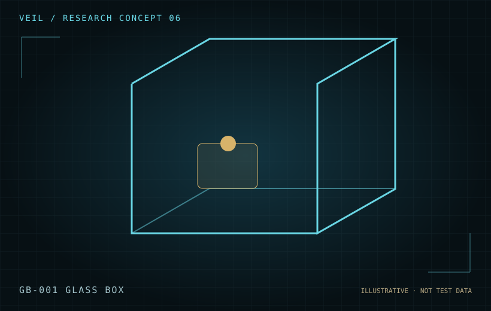

Design
The conceptual platform uses environmental isolation, transparent walls, synchronized observation and measurable interaction points.
A proposed transparent, raised, isolated chamber designed to support instrumented sub-experiments under repeatable, documented conditions.

The conceptual platform uses environmental isolation, transparent walls, synchronized observation and measurable interaction points.
Planned studies include toy-object interaction, historical-object conditions and a communication panel.
Assess vibration, airflow, thermal variations, electrostatic forces, human access and sensor reliability.
Concept and engineering planning. The chamber has not been built.
VEIL’s planned instruments share a common emphasis: synchronized measurement, rigorous controls, raw evidence preservation and transparent review.
Contact · Collaborate · Support →